FIRST Robotics · 2025 REEFSCAPE
Deep-Cage Climber
I worked on this mechanism from early climber concepts through prototypes, CAD, machining, assembly, competition testing, and a major redesign. The final system grew out of the problems we found by actually building and competing with the first version.
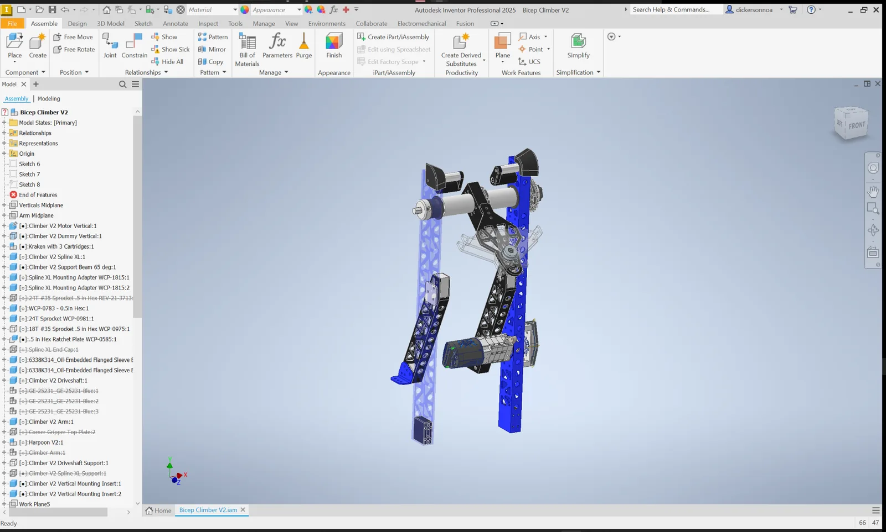
01 · Architecture
Deep climb was a priority from the start
One of our first decisions of the season was what capabilities mattered most. Deep climbing ranked very high, so I started by looking at the general climber architecture before committing to detailed CAD.
Two early concepts stood out: a donut-style climb and a larger elevator-style concept. Both had things I liked, but both created major system-level problems for our robot.
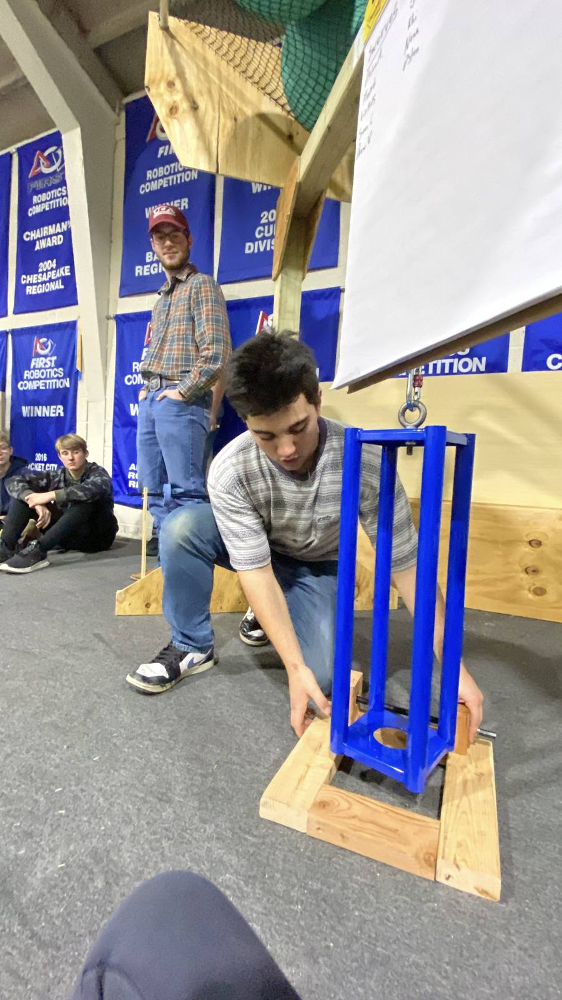
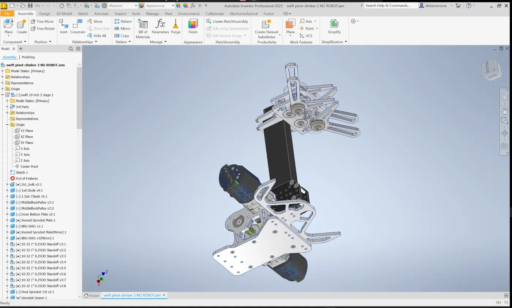
02 · Bicep V0
Finding an architecture that fit the robot
We ended up pursuing what we called the bicep climber. I do not remember every factor that went into that decision, but two were critical: it could stay light enough and I could package it inside the space I was given on the robot.
It also gave me useful control over where the cage would end up relative to the robot after climbing. By changing the geometry of the vertical supports, arms, and cage interface, I could move the final cage position and work around the rest of the robot.
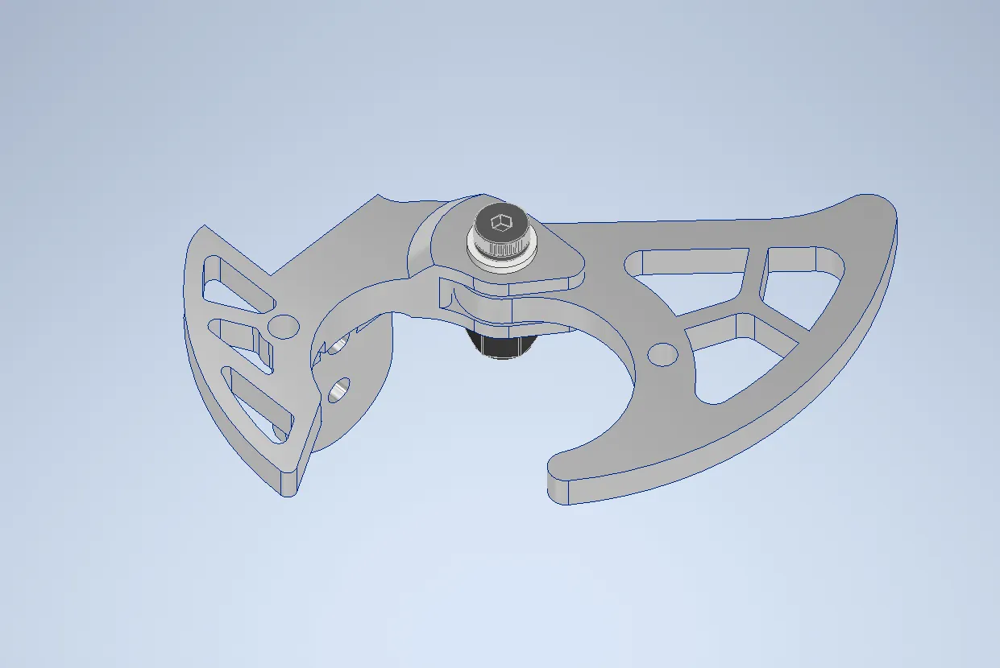
Geometry studies
Using CAD to control where the cage ended up
I changed the climber geometry to study how the cage would settle relative to the robot. The exact arm, vertical, and cage-interface geometry mattered because the mechanism had to fit the robot before, during, and after the climb.
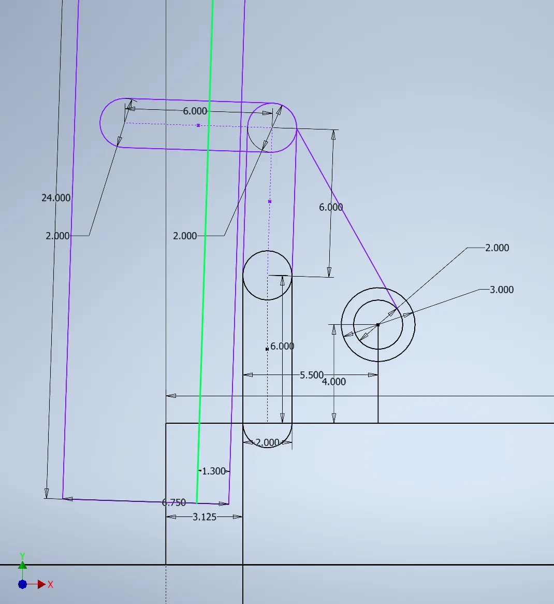
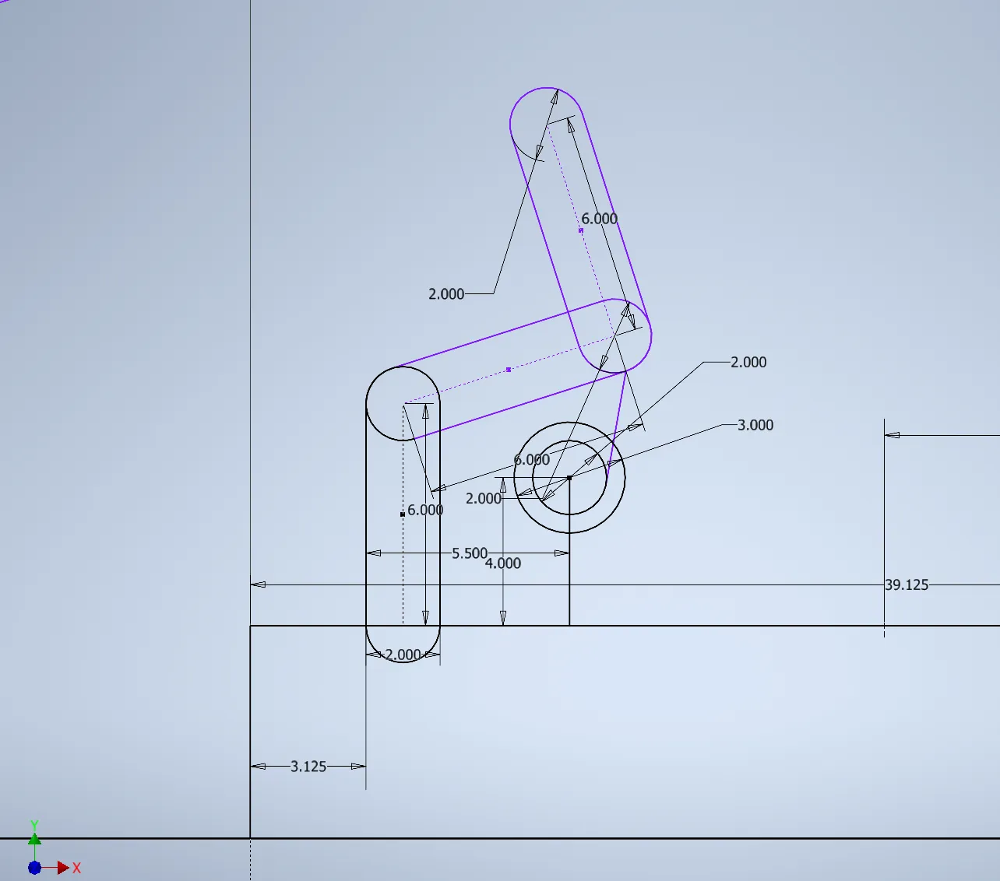
03 · Cage interface
Replacing the claws with a harpoon
The V0 claws were terrible in practice. They did not want to open when the cage entered, and once they opened they did not want to close consistently. Their position had to be nearly perfect for the mechanism to work, which was not realistic for a competition robot. They were also large and bulky.
The replacement harpoon was inspired by another team’s concept and adapted to work with our climber. It was much more forgiving: the cage could push through the barbs easily, and the barbs returned open on the other side to retain it. Two rounded indentations in the barbs cradled the cage bars once engaged.
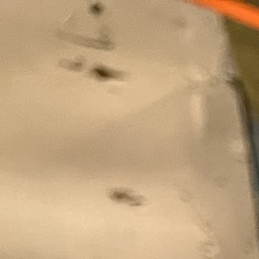
04 · V1
From prototype to competition robot
V1 turned the bicep architecture and harpoon concept into the first complete competition design. I worked through CAD, machining, assembly, and installation to get the system onto the robot for our first event.
The Arkansas Regional gave us operating conditions that shop testing had not. The biggest problem was in the lower drivetrain: chain load bent the long lower hex shaft enough for the sprocket and chain system to skip. That made lifting inconsistent.
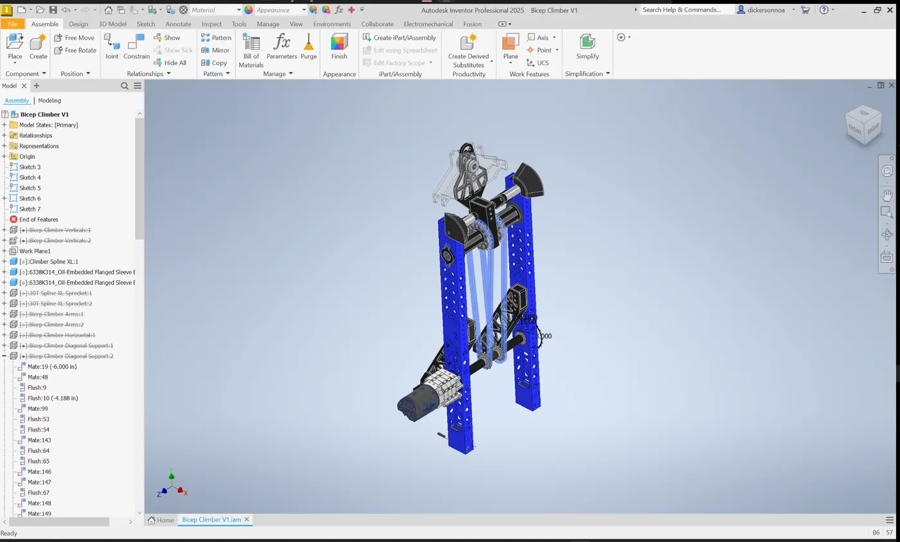
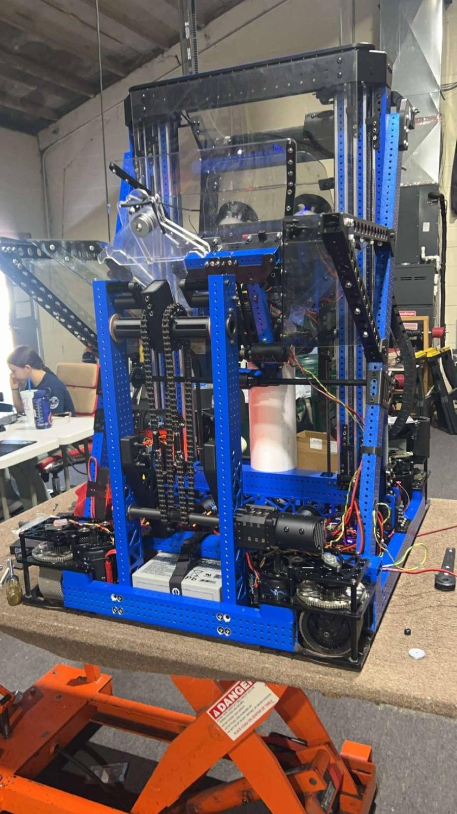
05 · V2 redesign
Fixing the shaft-deflection problem
The biggest V2 change was the lower drivetrain. In V1, the motor was mounted outside the vertical support and drove through a long shaft. In V2, I moved the motor to the inside and placed a single sprocket directly next to the support vertical. That shortened the shaft dramatically and reduced the leverage the chain load had to bend it.
Once that deflection was gone, the system stopped skipping and could lift the robot much more consistently. Shortening the shaft also removed weight.
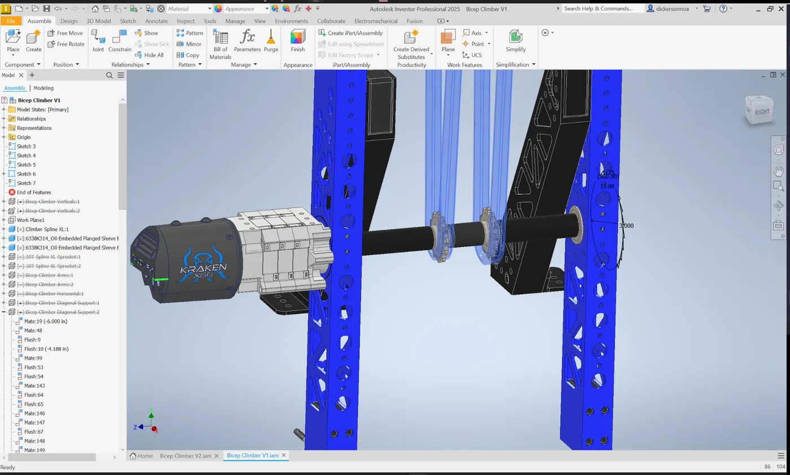
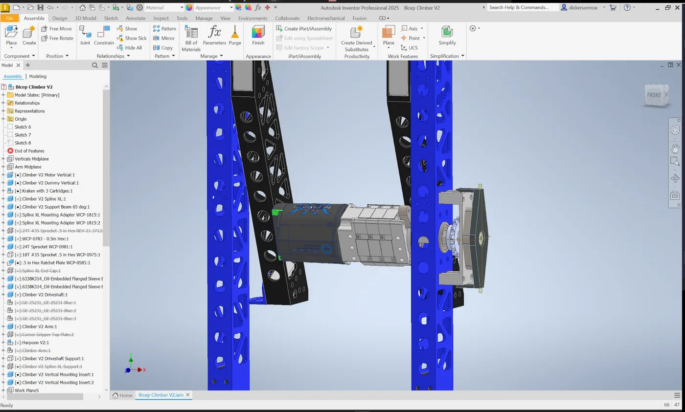
Support redesign
Using the packaging change to simplify the structure
Relocating the motor meant the vertical supports had to change anyway, so I redesigned them around the finalized configuration instead of carrying over V1 geometry. I removed mounting holes we no longer needed, cut unnecessary material, and ended up with a lighter, cleaner final part.
06 · Alignment
The cage guides became vital
Reliability was only part of the problem. The drivers still had to put a swinging cage in the right place for the harpoon to engage. We added the yellow cage guides to make that alignment easier and faster.
The guides stayed raised during normal match play. When the climber deployed, it pushed the guides down and outward with it. They were not really a change to the climber itself, but they became a vital addition to the overall climbing system and made our final setup much easier to use.
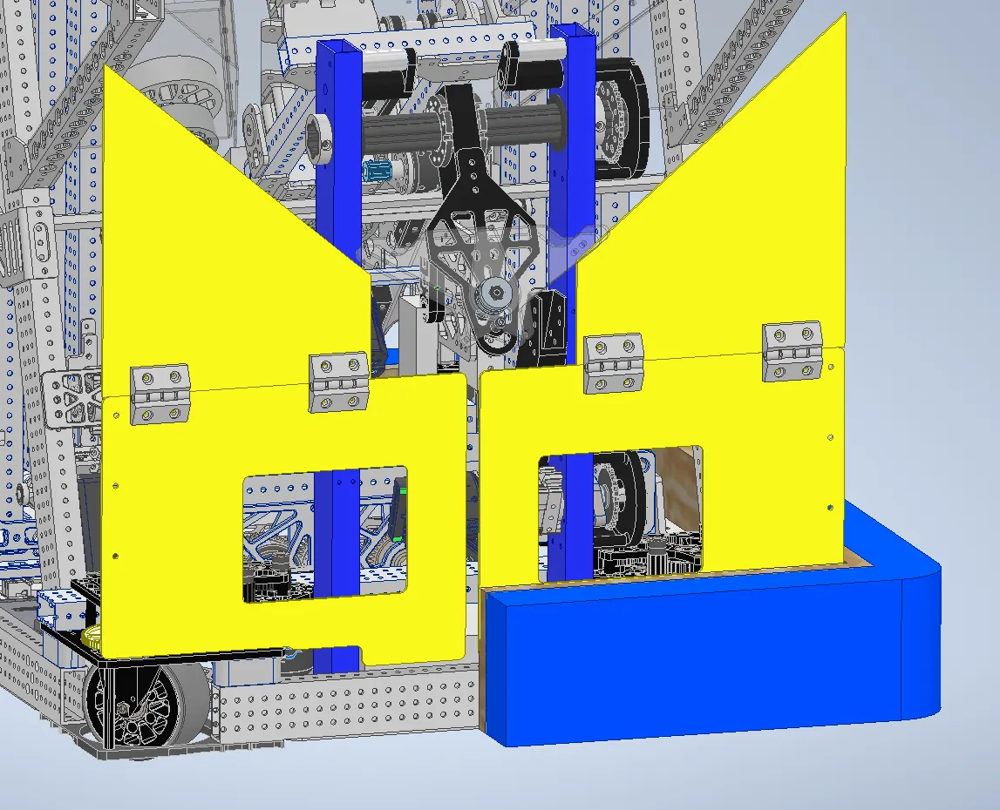
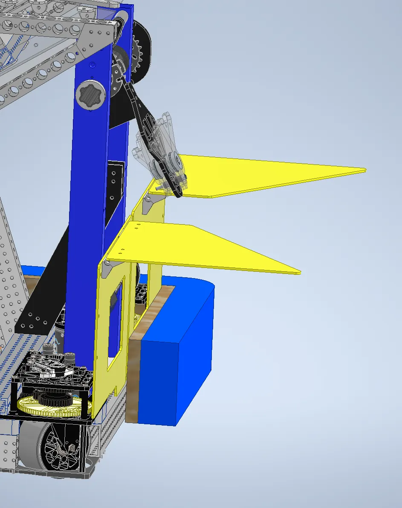
07 · Result
A much more usable climbing system
The final version was not one big breakthrough. It was the result of repeatedly finding what did not work and changing the design around those problems. V2 removed the shaft-deflection issue, the revised structure cut unnecessary weight, and the cage guides made the mechanism much easier to line up in a match.
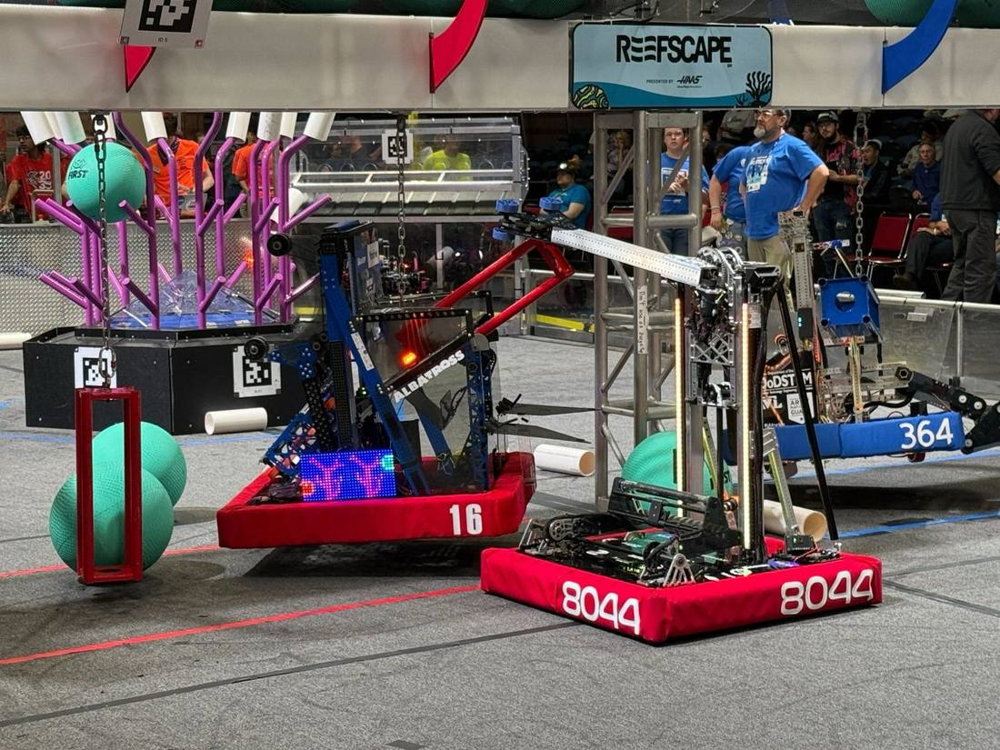
Team project: This mechanism was developed as part of Bomb Squad, FRC Team 16. This case study focuses on the climber work I personally contributed to within the larger robot and team effort.